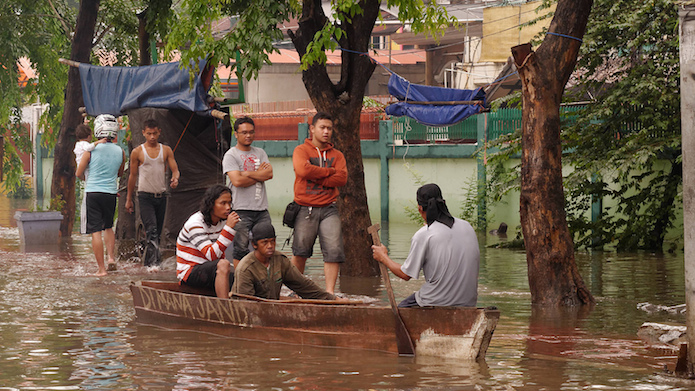

ODI Showcase 2016: Peta Jakarta
Tomas Holderness explains his winning ODI Showcase project Peta Jakarta – an open source flood map, updated by citizens with real-time flood information using social media – and how megacities can learn to respond to weather challenges
 Flooding in Jakarta in January 2013. CC BY 2.0, uploaded by [Seika](https://www.flickr.com/photos/nseika/8388426475/in/photolist-dMfSWF-dP8y96-jjwjbx-dP8wkP-n4rwLC-hhSeBQ-dMfSEv-dMfTLD-hhScz3-dMVsBP-q5EW5C-dMfTJZ-pQkKrZ-eUeCQP-q7AsTz-q5EW3y-dN21Zy-jugNmu-pQnMko-pQqLwA-dN21ts-66xrFq-66ta5R-q7L684-dN21yo-dMfSQk-dMVudT-66tamp-pQkKhv-q7U5BL-dMVtCe-pQqLDE-q7L6de-dN21P9-dMmsyd-dN22VA-dN23gC-q5EWbE-dMVtbk-pQkKoH-5GzZ4j-dN22Ky-dN21gC-dN23e7-5FcZe6-dMVtwH-fFBQRY-9nezy2-dMVtCR-d71a5S “Seika").
What’s your idea in a nutshell?
PetaJakarta.org is an open source flood map for the city of Jakarta, Indonesia, which experiences severe flooding on an annual basis.
The map combines citizen reporting, social media, government flood alerts and sensor data to provide information for residents and government during flooding. Critically, PetaJakarta.org maps the location of flooding in real time, helping the public and emergency services to improve responses to flooding, by helping to answer questions such as:
There’s flooding nearby, should I collect my kids from school early?
... and:
Which neighbourhoods are currently worst affected by flood waters?
Sounds interesting! What gave you this idea?
PetaJakarta.org is a project led by the Open Source Geospatial Laboratory (OSGeoLab) at SMART Infrastructure Facility, University of Wollongong. The lab’s focus is on developing new and innovative methods using open source geospatial data to understand the resilience of infrastructure to extreme weather events and climate change.
Jakarta is cited by the World Bank as being "data scarce", and so during flooding there was very little information available.
But the city has one of the highest number of Twitter users on the planet – Indonesians love social media! As researchers, we were intrigued as to whether we could transform social networks into real-time platforms for mapping data collection and information sharing during emergencies.
"Peta" means map in Indonesian; thus the idea for MapJakarta was born.
When did you first get excited about open data?
We know that spatial modelling of cities works well in ‘data rich’ countries, but there had been limited use in developing nations. We wanted to explore ways to solve the engineering challenges of the rapidly urbanising cities, which are often ‘data poor’.
Previously we demonstrated that data from OpenStreetMap – collected by residents in Africa – could be used to solve real-world engineering challenges. If this data wasn’t open or available, we’d never be able to use it for analysis. PetaJakarta.org is really an extension of this idea – we look at how to build tools that enable residents to submit reports to the government and vice-versa in real time. Open data is key to ensuring that everyone has access to the information.
Where do you see open data in 10 years?
The PetaJakarta.org project has developed a platform of civic co-management, connecting residents and government during times of need, to help the city respond to extreme weather events. Open data methodologies are critical to this approach so as to build a platform of trust and transparency between stakeholders – ensuring that everyone has access to the same data for decision making. I think this trend will continue as megacities seek new and innovative ways to respond to the challenges of weather intensification, urbanisation and climate change; governments will increasingly need to collect data from and share data with residents, as well as integrating multiple sources of information.
What are your plans for your project, and how will you achieve them?
Information is the most important resource during a disaster. The ODI Showcase, through creation of a short video, interactive diagrams and documentation, will help us demonstrate how combining lots of different data from social media reports to river gauge measurements, provides the best possible source of information for decision making during flooding. And by making the map and its data open, we ensure that this information is accessible and useable by individuals, communities and government agencies.
Furthermore, we’ve successfully demonstrated that social media networks can be transformed into emergency communication and coordination networks. All of this research is underpinned by the sharing of software and data in an open manner. This is where the showcase comes in, we need to document the project, to explain the value of its approach and how it offers a practical solution for developing platforms of civic co-management in cities facing extreme weather events. In effect, the output of our ODI Showcase will help us work towards a template of methodologies based on the PetaJakarta.org project, which other cities can use to build their own software and data sharing processes for resilience against a range of different types of disaster.
Stay tuned for updates on the Peta Jakarta ODI Showcase project, and follow @petajkt and @iHolderness on Twitter.
Dr Tomas Holderness is a Chartered Geographer and leads the Open Geospatial Laboratory at the SMART Infrastructure Facility, University of Wollongong, where he is Co-Chief Investigator on the PetaJakarta.org project alongside Dr Etienne Turpin. The PetaJakarta.org project was originally supported by the Australian National Data Service.
The ODI Showcase supports projects that demonstrate how open data can be used to bring longstanding benefits to individuals, organisations and society. The ODI provides grant funding, mentoring and promotional support to maximise these impacts. Find out more here. This ODI Showcase project will be carried out with the aid of a grant from the International Development Research Centre, Ottawa, Canada.
If you have ideas or experience in open data that you'd like to share, pitch us a blog or tweet us at @ODIHQ.